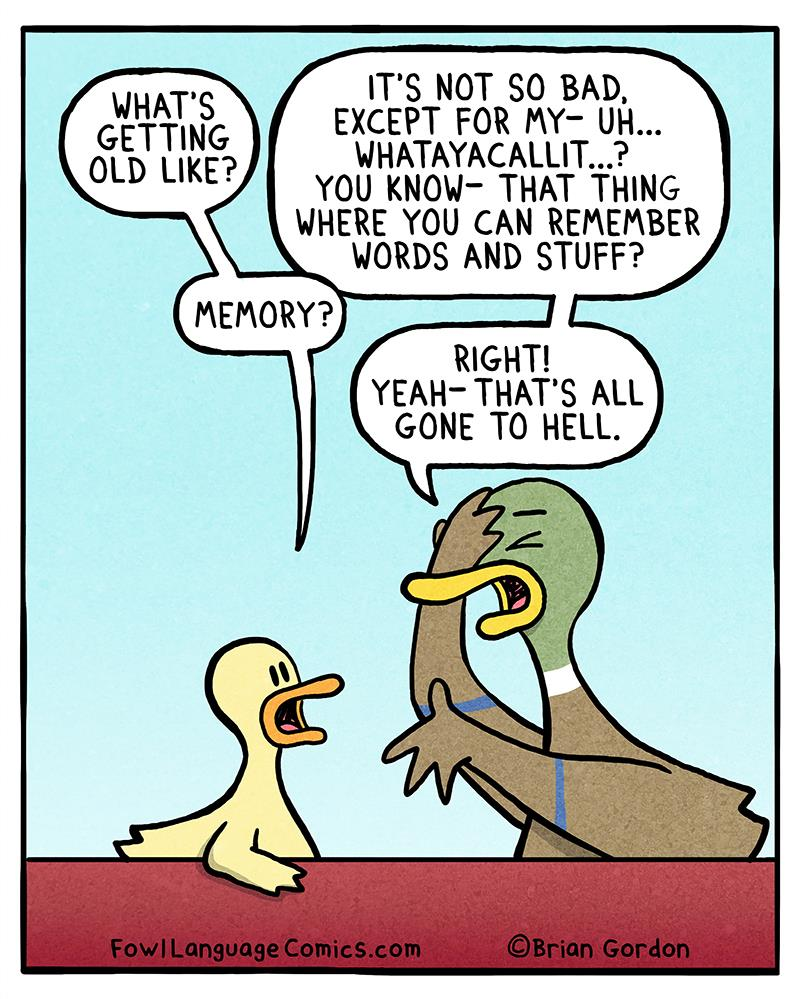

You have Photographic Memory powers

Side effects include trauma, brain overload, and headaches
With a click of your mental camera, you'll ace the test
or capture the culprit's face who stole your phone.
You don't have to worry about stressing for the answers while
taking the exam.
The ability to remember information or visual images in great
detail.